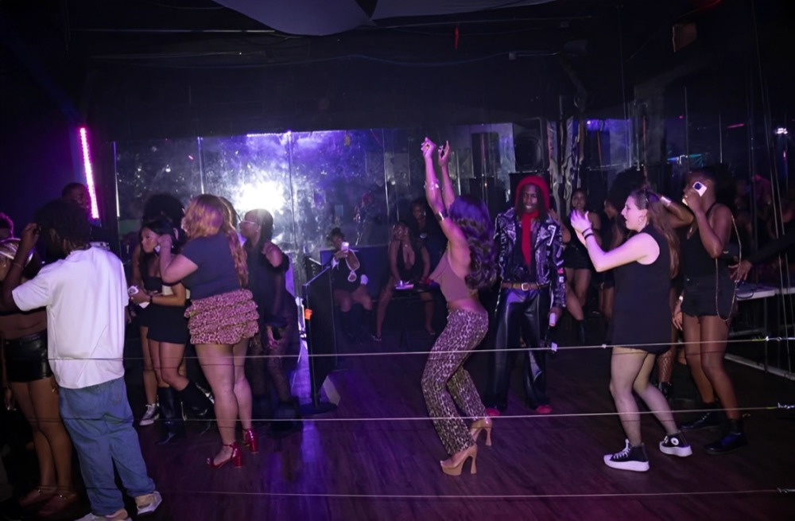
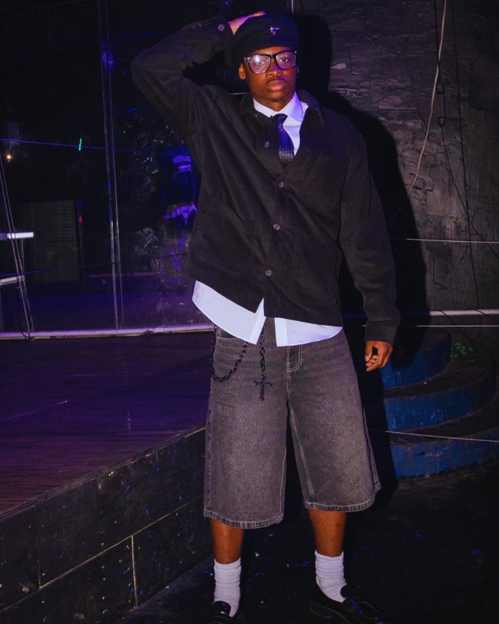
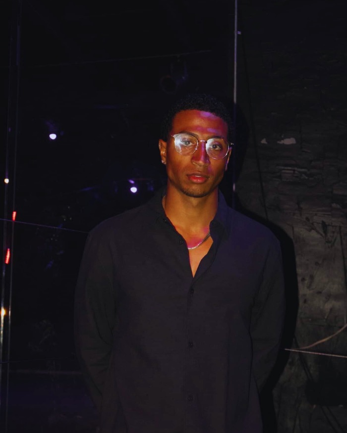
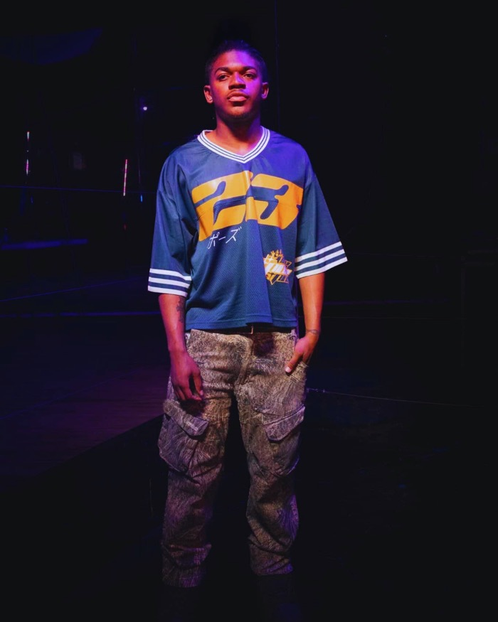
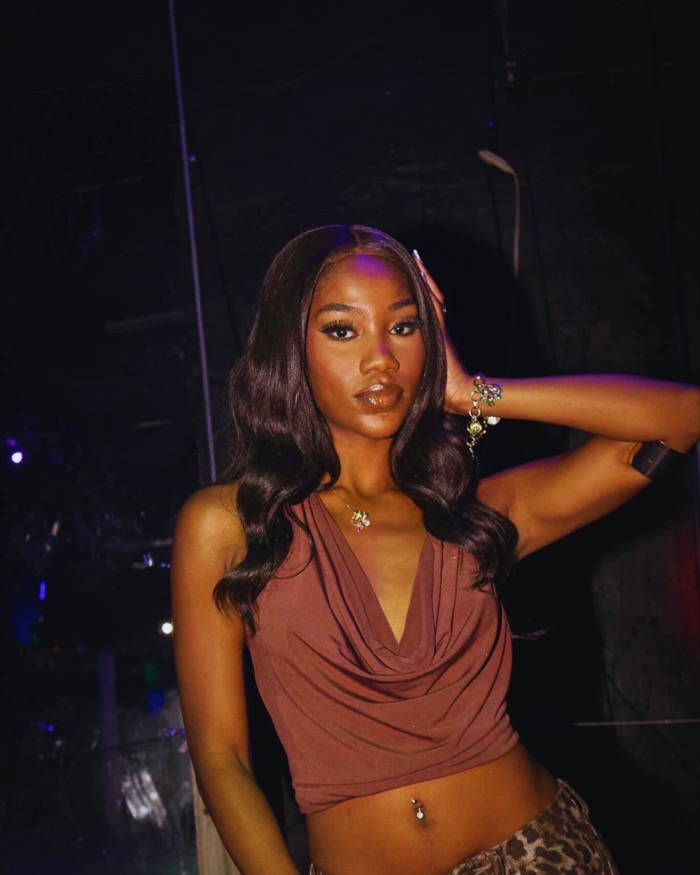
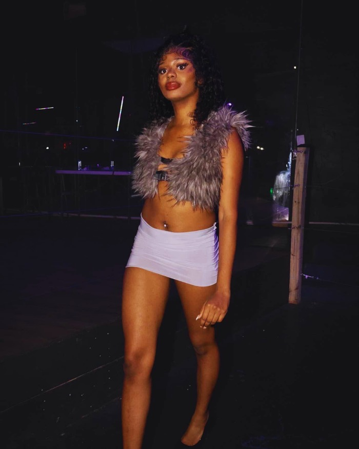
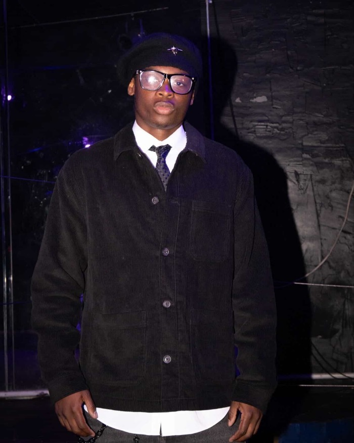
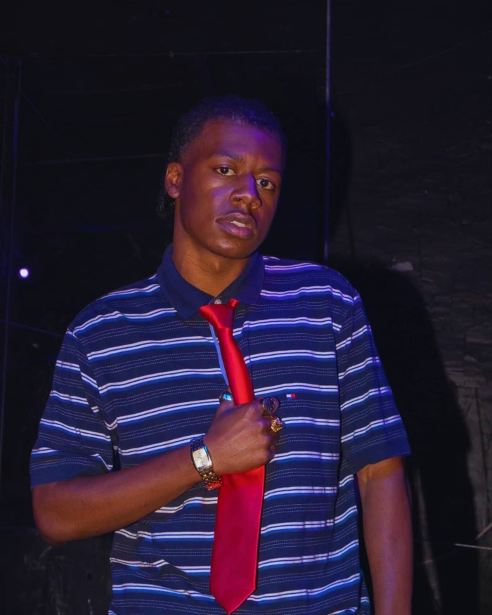
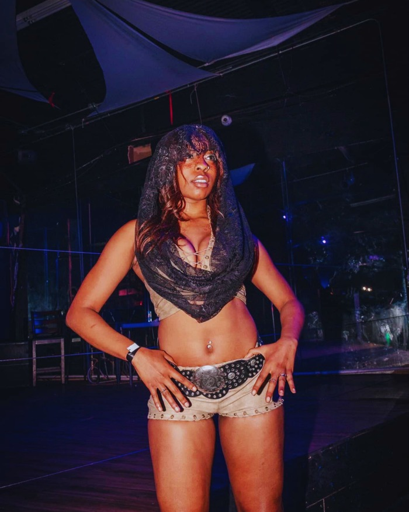
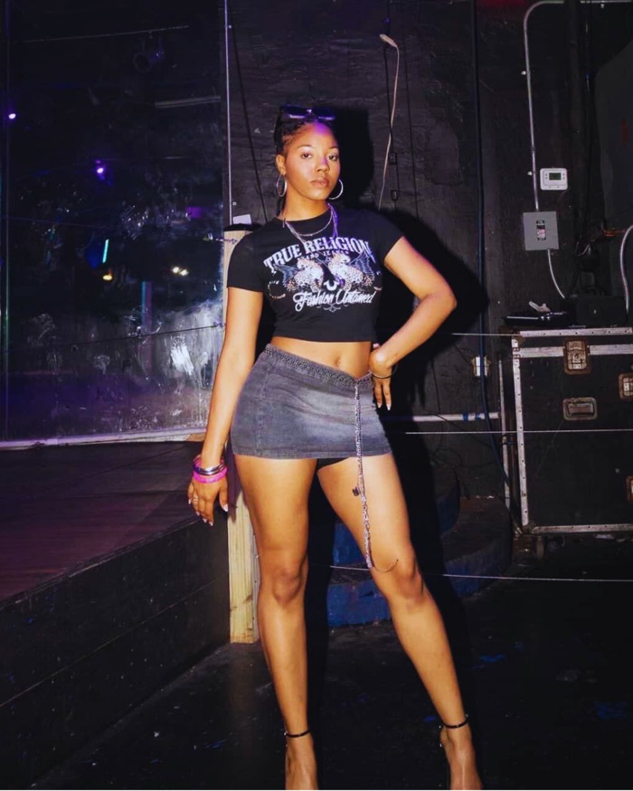
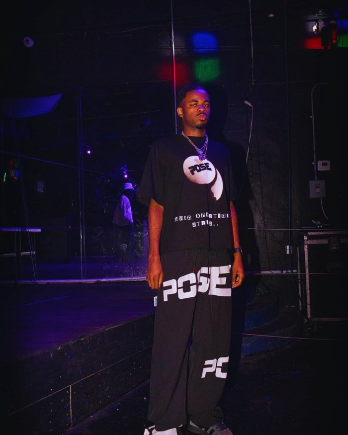
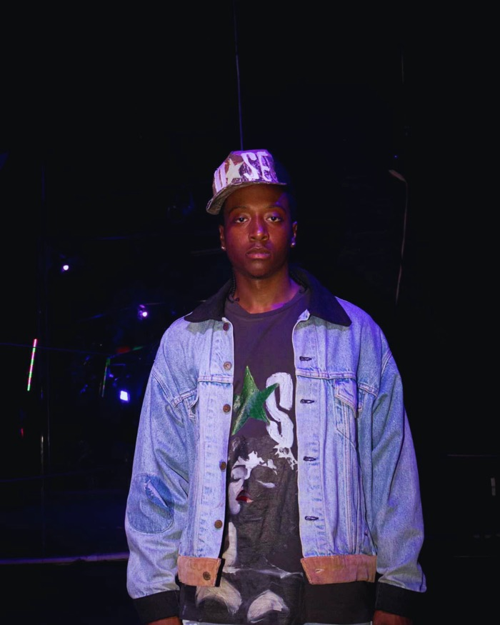
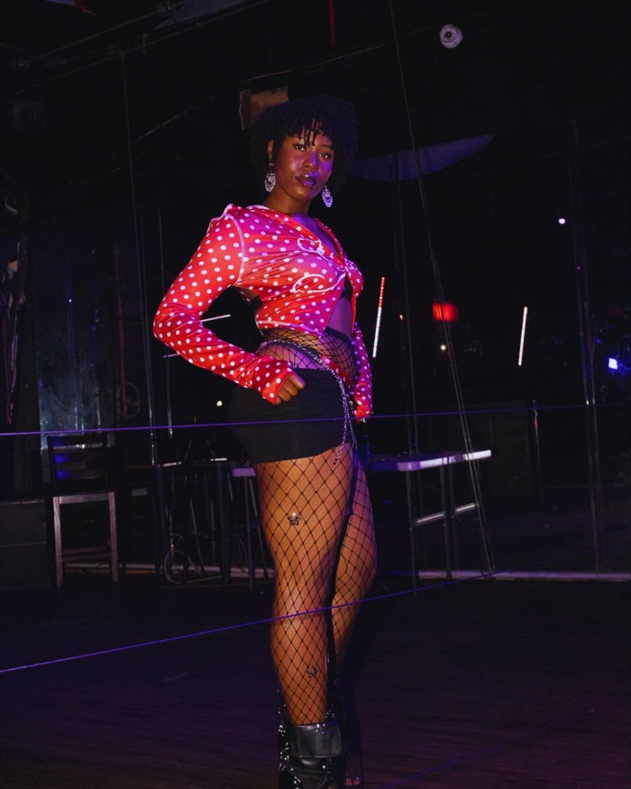
Hosted a fashion show and nightlife event in Baton Rouge, with models from across Louisiana and brands from around the world. What started as a question — where do independent designers and stylists actually get to show their work? — became a full production: casting, styling, a runway, and a crowd.
With the rise of streetwear and underground fashion, small independent brands were popping up faster than they had a stage to show on. The Affair was built to give Baton Rouge’s creative scene exactly that — models, designers, and brands from across the city sharing one runway — and to set the tone ahead of launching the VÔTY fashion app.